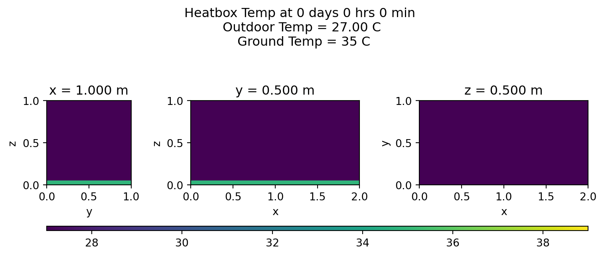
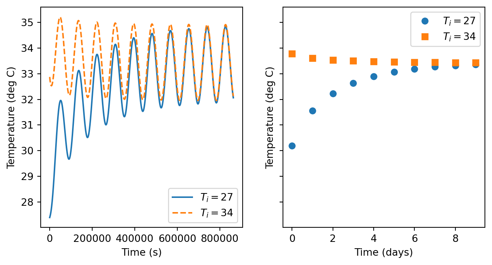
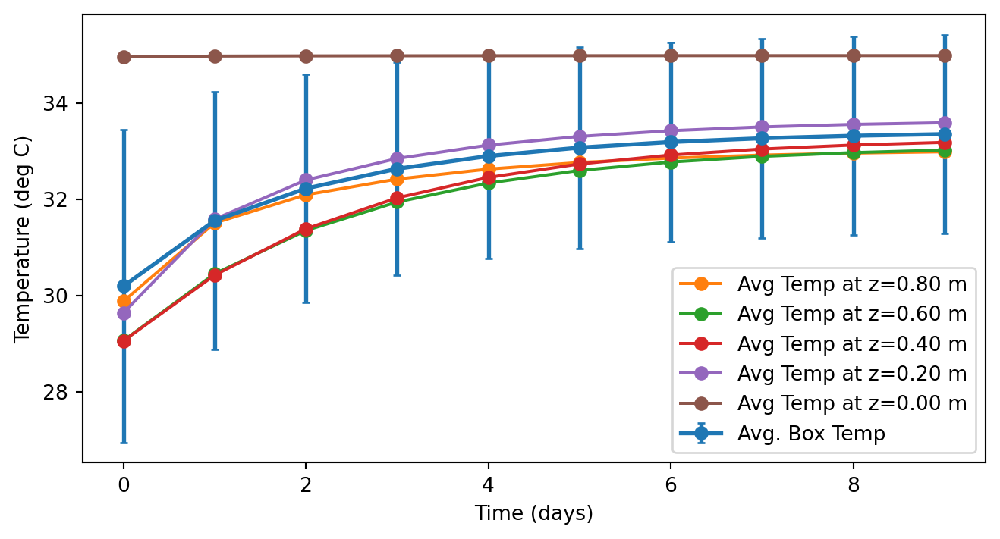

import numpy as np
import matplotlib.pyplot as plt
# Length and time parameters (meters)
L = 2
W = 1
H = 1
oneDay = 24*60*60 # seconds
T = 10*oneDay # Let this run for several daysPersonal Motivation for this post
I have a house, and I need to improve the heating/cooling in it. Essentially, the problem is that my house is a long and narrow, and the air return is not able to sufficiently draw the cold/hot air from rooms on the far side of the house. Essentially, the air return/exchange system is not sufficient. As a result, half of my house is really hot in the summer/extra chilly in the winter.
There is some ducting in place intended to aid circulation, but it is ineffective as it doesn’t draw any air from the hot/cold room, relying on diffusion only to drive circulation. Furthermore, it is located in a bedroom rather than the living room which is significantly larger, more distant from the return, and–as a result–has the largest temperature problem. I am planning on installing a duct fan, which will help solve this problem. But that leaves these questions:
- How strong should my duct fan be?
- Will the existing return be enough to alleviate the problem by simply adding in a duct fan?
- If the answer to the previous question is no, where should I put another vent to make the biggest impact?
I figure I can use my physics brain, and a little code to analyze this problem. So I’m going to spend some time figuring out how to implement the heat equation with appropriate boundary conditions applying them to scenarios that are progressively more complex, until I feel that I can apply them to my own house.
Heat Equation
All of this starts by understanding heat flow. The heat equation is:
\[ \frac{\partial u}{\partial t} = \alpha \nabla^2u \]
where \(u = u(x,y,z,t)\) is a function describing the temperature at every point in space and time in the region of interest and \(\alpha\) is the Thermal Diffusivity of the material (which can depend on position as well). There are many boundary conditions that can be applied, but I will apply Robin Conditions which generally apply to convection/conduction.
\[ k \left. \frac{\partial u}{\partial n}\right|_{S} = h \left(u(S,t) - v(S, t)\right) \]
Here \(n\) is the direction of the outward normal of the boundary surface, \(S\) indicates a spatial point on the boundary surface, \(k\) is the thermal conductivity, \(h\) is the heat transfer coefficient, and \(v\) is the temperature on the other side of the boundary. This is the “Newton’s law of cooling” that you may have heard about in an introductory calculus class, although, it is usually presented as:
\[ \frac{dT}{dt} = -a(T-T_0) \] where \(a\) is some sort of constant, and \(T_0\) is the temperature of the surroundings. What this means is that the steady-state behavior of this system is that it tends towards the temperature of the surroundings. This has limitations which I will discuss later.
Simple system
As a “simple” 3D system, I’ll model a “hot box” or “sweatbox” used by some for torture. This is not, nor should it be construed as an endorsement of torture. It’s just a simple box, and it gives me some intuitive knobs to use as I work this problem. Also, given the boundary condition that I previously mentioned, this means that the box can never be warmer than the surroundings. This isn’t fully realistic yet, as anyone who has seen a PSA about leaving kids/pets in a hot car even on a “cool” day. But there’s enough here to get me to start writing code.
Box dimensions
I will model this as a box with length \(L\), width \(W\), and height \(H\). I’ll orient my coordinate system so that the origin is in a lower corner and points \((x,y,z)\) in the region of interest are bounded by the following: \(0\leq x\leq L\), \(0\leq y \leq W\), and \(0\leq z \leq H\).
Thermal properties of the box
I will assume that the box is uniform. That means no windows or ventilation. So \(h\) and \(k\) are constant and uniform on the boundary. According to Wikipedia, the thermal diffusivity of air is \(1.9\times 10^{-7}\) m\(^2\)/s. According to this article by Jayamaha et.al., the heat transfer coefficient for walls varies from 6 to 10 \(\frac{\text{W}}{\text{m}^2 \text{K}}\). Looking at the greenspec.co.uk website it would seem that the thermal conductivity of most building materials is on the order of 0.02-0.04 \(\frac{\text{W}}{\text{m K}}\).
# Heat parameters
alpha = 1.9e-7 # meters^2/s for air
h = 10 # From Jayamaha
k = 0.04 # From GreenspecModeling exterior temperature
I’m going to assume the air temperature is time-dependent, and takes the form:
\[ v^{\text{air}}(t) = T_0 - \Delta T \cos\left(\Omega t\right) \]
where \(T_0\) is the average temperature of the day, and \(\Delta T\) represents the range of temperature. On the ground, I’ll assume the temperature is constant at \(T_G\). So \(t=0\) is sunrise. Making these parameters functions is overkill for now, but will be helpful as I get more complicated.
# Temperature parameters
T0 = 33
DT = 6
TG = 35
def vair(T0,DT,t):
Omega = 2*np.pi/oneDay
vair = T0 - DT * np.cos(Omega * t)
return vair
def vground(TG, t):
return TGGoing from differential equations to matrix equations
This is going to get a bit technical, and if you want to skip the details of the math behind the algorithm you can skip to the results in Section 5.
Essentially, the basis for all numerical methods involving systems that evolve in space and time is to replace continuous space and time values with a discrete mesh of space and time values. For this system, we are looking for the temperature at every location in space and time. So we will do this on a reduced space/time grid. Instead of having a function of \((x,y,z,t)\) we will have a 4-dimensional matrix that I will denote as follows:
\[ u(x,y,z,t) \rightarrow u(x_i,y_j,z_k,t_l) = u^l_{ijk} \]
For this I will define:
\[ \begin{align*} x_i &= i \Delta x \\ y_j &= j \Delta y \\ z_k &= k \Delta z \\ t_l &= l \Delta t \\ \end{align*} \]
where \(\Delta x, \Delta y, \Delta z,\) and \(\Delta t\) are computational choices. Indeed, this freedom will allow me to choose \(\Delta x = \Delta y = \Delta z\). I will choose \(\Delta x = 5\) cm and \(\Delta t = 15\) minutes. I’ll also define the max indices for this system, and also set up values for the grid. I will also set up the \(u^l_{ijk}\) grid, and fill it with a constant value. Actually, I will do this for two different initial temperatures. If my code is working correctly, the initial temperature of the box should not matter if we let the simulation run for long enough. Think about it this way: Imagine that you have two identical coolers, one filled with ice and the other empty. Now, let the coolers sit for a year in your yard. After that year, the coolers will no longer have a different temperature.
# Computational parameters (time step and mesh size)
Deltat = 60*15 # 15 minutes in seconds
Deltax = 0.05 # 5 cm in meters
xmax = int(L/Deltax)
ymax = int(W/Deltax)
zmax = int(H/Deltax)
tmax = int(T/Deltat)
xmid = xmax // 2
ymid = ymax // 2
zmid = zmax // 2
t = np.linspace(0,T,tmax)
xgrid = np.linspace(0,L,xmax+1)
ygrid = np.linspace(0,W,ymax+1)
zgrid = np.linspace(0,H,zmax+1)
# Initialize the array(s) with a few different initial temperatures.
u = np.empty((tmax,xmax,ymax,zmax))
uAlt = np.empty((tmax,xmax,ymax,zmax))
u_init = T0-DT
u.fill(u_init)
uAlt_init = (T0+TG)/2
uAlt.fill(uAlt_init)Applying the Finite difference method to the boundary condition
The boundary condition for conduction/convection states that the gradient of the temperature function at the boundary is proportional to the temperature difference across that boundary. For example on the surface where \(x=0\) (or \(i=0\)), the outward normal direction is in the \(-x\) direction: \[ \left. k\frac{\partial u}{\partial x}\right|_{x=0} = h(u(x=0,y,z,t) - v(x=0,y,z,t)) \] I will apply the finite difference method to find the spatial derivatives. \[ \begin{align*} \frac{\partial u}{\partial x} &= \frac{u^l_{i+1 jk}-u^l_{ijk}}{\Delta x} \\ \frac{\partial u}{\partial y} &= \frac{u^l_{ij+1 k}-u^l_{ijk}}{\Delta y} \\ \frac{\partial u}{\partial z} &= \frac{u^l_{ijk+1}-u^l_{ijk}}{\Delta z} \\ \end{align*} \]
Therefore, for \(i=0\) (the \(x=0\) boundary) we get: \[ u^l_{1jk} - u^l_{0jk} = \frac{h\Delta x}{k} \left(u^l_{0jk} - v^l_{jk}\right) \] Solve for \(u^l_{0jk}\): \[ u^l_{0jk} = \frac{u^l_{1jk} + \beta v^l_{jk}}{1+\beta} \]
where I have defined: \[ \beta = \frac{h \Delta x}{k} \] Note that if \(\beta = 0\) boundary has an infinite thermal conductivity and \(u^l_{0jk} = u^l_{1jk}\) or \(\frac{\partial u}{\partial n} = 0\). This is the Neumann Boundary Condition. If \(\beta\rightarrow\infty\), we find \(u^l_{0jk} = v^l_{jk}\) and the temperature at the boundary is equal to the exterior temperature. This is the Dirichelet Boundary Condition.
Plugging in some numbers, I’ll assume that the proportionality constant \(\beta\) for heat exchange with the ground is 10 times larger than the same constant for heat exchange with the air.
Let’s put this into code and apply the boundary condition to the initial array:
beta = h*Deltax/k
betaG = 5*beta
def applyBC(umat, tl):
t = tl*Deltat
umat[tl, 0, :, :] = (umat[tl, 1, :, :] + beta * vair(T0,DT,t))/(1+beta)
umat[tl, xmax-1, :, :] = (umat[tl, xmax-2, :, :] + beta * vair(T0,DT,t))/(1+beta)
umat[tl, :, 0, :] = (umat[tl, :, 1, :] + beta * vair(T0,DT,t))/(1+beta)
umat[tl, :, ymax-1, :] = (umat[tl, :, ymax-2, :] + beta * vair(T0,DT,t))/(1+beta)
umat[tl, :, :, 0] = (umat[tl, :, :, 1] + betaG * vground(TG,t))/(1+betaG)
umat[tl, :, :, zmax-1] = (umat[tl, :, :, zmax-2] + beta * vair(T0,DT,t))/(1+beta)
return umat
## Apply BCs at t=0 to finish initializing array
u = applyBC(u, 0)
uAlt = applyBC(uAlt,0)Applying the finite difference method to the heat equation: \(\dot{u} = \alpha\nabla^2u\)
I will again apply the finite difference method to find the derivatives. The first derivative in time is: \[ \frac{\partial u}{\partial t} = \frac{u^{l+1}_{ijk} - u^{l}_{ijk}}{\Delta t} \]
Another aspect of this method is that the Laplacian at any point can be calculated through the average of the difference between the nearest neighbors of that point and the point itself: \[ \nabla^2 u(x,y,z,t) = \frac{u^l_{i+1 jk} + u^l_{i-1 jk} + u^l_{ij+1k} + u^l_{ij-1k} + u^l_{ijk+1} + u^l_{ijk-1} - 6 u^l_{ijk}}{(\Delta x)^2} \]
The heat equation becomes: \[ u^{l+1}_{ijk} = u^l_{ijk} + \frac{\alpha \Delta t}{\Delta x^2} \left(u^l_{i+1 jk} + u^l_{i-1 jk} + u^l_{ij+1k} + u^l_{ij-1k} + u^l_{ijk+1} + u^l_{ijk-1} - 6 u^l_{ijk} \right) \] Basically, this equation gives us a method for finding the temperature after a time step given the temperature at the previous time step. I will define the dimensionless constant \(\gamma\) as follows:
\[ \gamma = \frac{\alpha \Delta t}{\Delta x^2} \]
so we finally obtain: \[ u^{l+1}_{ijk} = u^l_{ijk} + \gamma \left(u^l_{i+1 jk} + u^l_{i-1 jk} + u^l_{ij+1k} + u^l_{ij-1k} + u^l_{ijk+1} + u^l_{ijk-1} - 6 u^l_{ijk} \right) \]
Now I will convert this to code:
gamma = alpha*Deltat/Deltax**2
def calcHeatEqn(umat):
tm, xm, ym, zm = umat.shape
# Apply BCs
umat = applyBC(umat, 0)
for l in range(0,tm-1):
for i in range(1, xm-1):
for j in range(1, ym-1):
for k in range(1, zm-1):
umat[l+1,i,j,k] = umat[l,i,j,k] + gamma * (umat[l,i+1,j,k] +
umat[l,i-1,j,k] + umat[l,i,j+1,k] + umat[l,i,j-1,k] +
umat[l,i,j,k+1] + umat[l,i,j,k-1] - 6 * umat[l,i,j,k])
umat = applyBC(umat, l+1)
return umatVisualizing the temperature:
The grid will probably be too fine to visualize well on a 3d heatmap. So I’ll settle for some cross sections. The function plotheatmaps will plot heat maps inside the box for a given time in 3 perpendicular planes.
Code
def plotheatmaps(umat,l,i,j,k):
Tmin = np.min([u.min(),T0-DT])
Tmax = np.max([u.max(),T0+DT])
xSlice = umat[l,i,:,:].transpose()
ySlice = umat[l,:,j,:].transpose()
zSlice = umat[l,:,:,k].transpose()
time = Deltat*l
tMins = time // 60
theMinutes = tMins % 60
tHours = tMins // 60
theDays = tHours // 24
theHours = tHours % 24
theTime = str(theDays) + " days " + str(theHours) + " hrs " + str(theMinutes) + " min"
xC, yC, zC = [Deltax*i, Deltax*j, Deltax*k]
fig, (ax0,ax1,ax2) = plt.subplots(ncols=3,width_ratios=[ymax,xmax,xmax],
figsize=(8,3))
fig.suptitle(f"Heatbox Temp at {theTime} \n Outdoor Temp = {vair(T0,DT,time):.2f} C \n Ground Temp = {vground(TG,time):.0f} C")
im0 = ax0.pcolormesh(ygrid, zgrid, xSlice, shading="flat", vmin = Tmin, vmax = Tmax)
ax0.set_aspect(1)
ax0.set_title(f"x = {xC:.3f} m")
ax0.set_xlabel("y")
ax0.set_ylabel("z")
im1 = ax1.pcolormesh(xgrid, zgrid, ySlice, shading="flat", vmin = Tmin, vmax = Tmax)
ax1.set_aspect(1)
ax1.set_title(f"y = {yC:.3f} m")
ax1.set_xlabel("x")
ax1.set_ylabel("z")
im2 = ax2.pcolormesh(xgrid, ygrid, zSlice, shading="flat", vmin = Tmin, vmax = Tmax)
ax2.set_aspect(1)
ax2.set_title(f"z = {zC:.3f} m")
ax2.set_xlabel("x")
ax2.set_ylabel("y")
fig.tight_layout()
cax = fig.add_axes([ax0.get_position().x0,ax0.get_position().y0-0.2,
ax2.get_position().x1 - ax0.get_position().x0, 0.02])
fig.colorbar(im2, cax = cax, orientation='horizontal')So the initial condition has the following heatmap:
plotheatmaps(u,0,xmid,ymid,zmid)
plotheatmaps(uAlt,0,xmid,ymid,zmid)
Results
Finally, we will compute the time evolution of the temperature for the two scenarios.
u = calcHeatEqn(u)
uAlt = calcHeatEqn(uAlt)Different initial condition comparison
I’m going to start by comparing the behavior of the system given different initial conditions for the starting temperature within the box. The hidden code below crunches the average temperatures for the plots in this and the following sections.
Code
## Calculate averages at every time step
airTemp = np.zeros(tmax)
groundTemp = np.zeros(tmax)
boxTemp = np.zeros(tmax)
btErr = np.zeros(tmax)
boxTempAlt = np.zeros(tmax)
btaErr = np.zeros(tmax)
boxTempZ = np.zeros((tmax,zmax))
btzErr = np.zeros((tmax,zmax))
for l in range(tmax):
airTemp[l] = vair(T0,DT,t[l])
groundTemp[l] = vground(TG,t[l])
ul = u[l, :, :, :]
ulAlt = uAlt[l, :, :, :]
boxTemp[l] = np.mean(ul)
boxTempAlt[l] = np.mean(ulAlt)
btErr[l] = np.std(ul)
btaErr[l] = np.std(ulAlt)
for k in range(zmax):
ulk = ul[:,:,k]
boxTempZ[l,k] = np.mean(ulk)
btzErr[l,k] = np.std(ulk)
## Calcs for temp in the day
stepsInDay = int(oneDay/Deltat)
days = int(T/oneDay)
day = np.arange(0,days)
boxTempDay = np.zeros(days)
btdErr = np.zeros(days)
boxTempDayAlt = np.zeros(days)
btdaErr = np.zeros(days)
boxTempDayZ = np.zeros((days,zmax))
btdzErr = np.zeros((days,zmax))
for d in range(days):
lmin = int(d*stepsInDay)
lmax = int((d+1)*stepsInDay)
ul = u[lmin:lmax, :, :, :]
boxTempDay[d] = np.mean(u[lmin:lmax, :, :, :])
boxTempDayAlt[d] = np.mean(uAlt[lmin:lmax, :, :, :])
btdErr[d] = np.std(u[lmin:lmax, :, :, :])
btdaErr[d] = np.std(uAlt[lmin:lmax, :, :, :])
for k in range(zmax):
boxTempDayZ[d,k] = np.mean(ul[:,:,:,k])
btdzErr[d,k] = np.std(ul[:,:,:,k])As noted previously, after a long enough time, I expect two identical boxes to exhibit the same behavior regardless of their initial conditions–much in the way that the long-term behavior of a Damped-Driven Oscillator is independent of the initial conditions. Let’s check that out here:
fig, (ax0, ax1) = plt.subplots(1,2,figsize=(8,4),sharey=True)
ax0.plot(t,boxTemp, '-', label=rf"$T_i=${u_init:.0f}")
ax0.plot(t,boxTempAlt, '--', label=rf"$T_i=${uAlt_init:.0f}")
ax0.set_xlabel('Time (s)')
ax0.set_ylabel('Temperature (deg C)')
ax0.legend()
ax1.plot(day,boxTempDay, 'o', label=rf"$T_i=${u_init:.0f}")
ax1.plot(day,boxTempDayAlt, 's', label=rf"$T_i=${uAlt_init:.0f}")
ax1.set_xlabel('Time (days)')
ax1.set_ylabel('Temperature (deg C)')
ax1.legend()
plt.show()
It would seem that the 10 days that I have simulated is long enough for these systems to reach this “steady state” solution.
Compare interior temperature to exterior temp
I’m going to plot the external (air) temperature and compare it to the average temperature in the box, as well as consider the average temperature in horizontal slices as the change in time.
plt.figure(figsize=(6.5,4))
plt.plot(t,airTemp,label="Air Temp",ls='dashed',linewidth=0.5)
plt.errorbar(t,boxTemp,yerr=btErr, label="Avg. Box Temp",linewidth=2, capsize=2, errorevery=24)
plt.xlabel('Time (s)')
plt.ylabel('Temperature (deg C)')
for k in reversed(range(0,zmax,zmax//5)):
zval = k*Deltax
labString = f"Avg Temp at z={zval:.2f} m"
plt.plot(t,boxTempZ[:,k],label=labString, linewidth=1)
plt.plot(t,groundTemp,label="Ground Temp",ls="dashed",linewidth=0.5)
plt.legend(loc="center left", bbox_to_anchor=(1.04,0.5))
plt.show()Just to see that this is stabilizing, and to get an idea of how fast this stabilizes, I’m going to find a daily average temperature as above.
plt.figure(figsize=(8,4))
plt.errorbar(day,boxTempDay,yerr=btdErr, marker='o', label="Avg. Box Temp",capsize=2,linewidth=2)
plt.xlabel('Time (days)')
plt.ylabel('Temperature (deg C)')
for k in reversed(range(0,zmax,zmax//5)):
zval = k*Deltax
labString = f"Avg Temp at z={zval:.2f} m"
plt.plot(day,boxTempDayZ[:,k], marker='o', label=labString)
plt.legend()
plt.show()
Heatmaps
Let’s view the middle cross sections every few hours on the last day:
for s in range(lmin,lmax,int(stepsInDay/12)):
plotheatmaps(u,s,xmid,ymid,zmid)Summary
This is working as a proof of concept. Job 1: Done. But there’s more to be done.
Next step
As a torture device, this leaves much to be desired. Right now, it’s no more effective than a chain-link fence from a temperature perspective. I’ll be working on adding in solar radiation in the next post.
My future plans:
As I seek to make this model more complex. I plan to do things that will slowly make my boring box look more like a house. Things like:
- Making the box house sized and adding an appropriate number of windows.
- Add in interior walls.
- Add in heating and cooling.